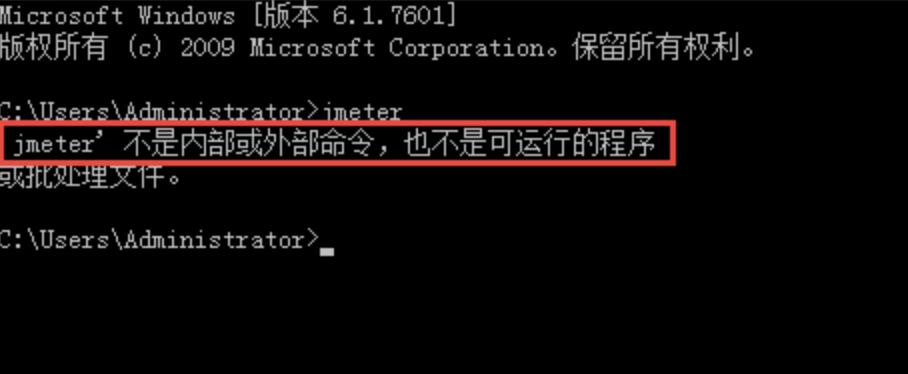
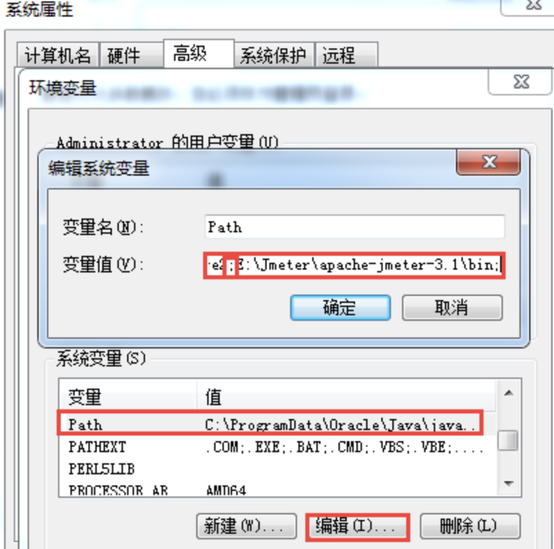

生成HTML报告
目标
- 学习如何利用Jmeter生成HTML报告
1. 效果
2. Statistics 图

3. Response Time Overview 图

提示：
JMeter 3.0以上开始支持自动生成动态报告
操作步骤：
两种模式：
- 无jtl日志或csv日志文件生成报告
- 有jtl日志或csv日志文件生成报告
1. 无日志文件生成：
1.1 基本命令格式：
jmeter -n -t <test JMX file> -l <test log file> -e -o <Path to output folder>
1.2 样例：
jmeter -n -t E:\课件\Jmeter\Script\自动化脚本\Stu_AutoScript.jmx -l testLog -e -o ./output/report
1.3 参数详解：
-n ：以非GUI形式运行Jmeter
-t ：source.jmx 脚本路径
-l ：运行结果保存路径（.jtl）,此文件
必须不存在
1) .jtl 2) .txt 3) 无后缀-e ：在脚本运行结束后生成html报告
-o ：保存html报告的地址, 此文件必须不存在
2. 使用已有的jtl日志文件或csv日志文件生成
2.1 基本命令格式：
jmeter -g <log file> -o <Path to output folder>
2.2 样例：
jmeter -g E:\课件\Jmeter\Script\自动化脚本\resultt.jtl -o ./outputreport
提示：
执行命令时，出现Jmeter不是内部或外部命令

解决：
- 将Jmeter目录下bin文件目录添加到环境变量Path中，注意追加路径是，前面分号； 